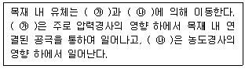
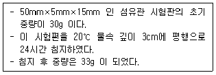
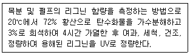

임산가공기사 (2018-08-19 기출문제)
1과목: 목재이학
1. 온도가 100℃일 때 전건목재의 비열은?
- 0.182kcal/kg℃
- 0.282kcal/kg℃
- 0.382kcal/kg℃
- 0.482kcal/kg℃
(정답률: 65%)

2. 목재의 모든 공극이 제외된 목재실질의 용적과 중량으로 구한 값은?
- 가비중
- 비용적
- 공극률
- 진비중
(정답률: 83%)
3. 목재의 탄성적 성질에서 포아송비에 대한 설명으로 옳은 것은?
- 항상 1보다 크다.
- 목재의 수종에 따라 다르지 않다.
- 종변형률에 대한 횡변형률의 비율이다.
- 목재의 섬유방향에 따른 포아송비는 모두 같다.
(정답률: 82%)
4. 목재의 수축률을 구하는 식으로 옳은 것은?
- (수축전 치수 - 수축후 치수) ÷ 수축전 치수
- (수축후 치수 - 수축전 치수) ÷ 수축전 치수
- (수축전 치수 - 수축후 치수) ÷ 수축후 치수
- (수축후 치수 - 수축전 치수) ÷ 수축후 치수
(정답률: 61%)
5. 목재의 하중단면적이 A, 최대압축하중이 P이면 종압축강도는?
- P÷A
- P×A
- P×A2
- P÷A2
(정답률: 77%)
6. 목재의 강도에 영향을 끼치는 인자가 아닌 것은?
- 목리배향
- 옹이 유무
- 이상재 여부
- 섬유포화점 이상에서의 함수율 값
(정답률: 80%)
7. 목재 내에 존재하는 결함수의 존재형태가 아닌 것은?
- 모관 응축수
- 단분자층 흡착수
- 다분자층 흡착수
- 세포내강 응축수
(정답률: 60%)
8. 목재의 열 확산율과 가장 관계없는 것은?
- 비열
- 밀도
- 기압
- 열 전도율
(정답률: 64%)
9. 목재의 전기저항에 대한 설명으로 옳지 않은 것은?
- 목재의 밀도가 클수록 저항이 크다.
- 온도가 상승함에 따라 전건목재의 저항이 감소된다.
- 섬유포화집 이상에서는 함수율의 영향이 적은 편이다.
- 섬유방향에 비해 접선방향이나 방사방향에서 저항이 크다.
(정답률: 40%)
10. 다음 ( )안에 들어갈 용어로 옳은 것은?

- ㉮ : 유동, ㉯ : 흡착
- ㉮ : 평형, ㉯ : 확산
- ㉮ : 흡착, ㉯ : 평형
- ㉮ : 유동, ㉯ : 확산
(정답률: 76%)
11. 목재의 섬유방향 수축율이 가장 적은 이유는?
- 접선단면의 마이크로피브릴 경사각이 방사단면보다 크기 때문에
- 방사단면의 마이크로피브릴 경사각이 접선단면보다 크기 때문에
- 2차벽 중층의 마이크로피브릴 경사각이 세포의 장축에 대하여 직각 또는 직각에 가깝기 때문에
- 2차벽 중층의 마이크로피브릴 경사각이 세포의 장축에 대하여 평형 또는 평형에 가깝기 때문에
(정답률: 62%)
12. 목재의 수축 및 팽윤에 대한 설명으로 옳지 않은 것은?
- 세포내강의 용적변화가 크다.
- 결합수의 증감에 따라 발생한다.
- 이방적 구조에 따라 큰 차이가 있다.
- 정상적인 수축과 팽윤은 섬유포화점 이상에서는 일어나지 않는다.
(정답률: 66%)
13. 전건비중이 0.6이고 진비중이 1.50인 경우 목재의 공극률은?
- 50%
- 60%
- 70%
- 80%
(정답률: 81%)
14. 헬륨치환법에 의하여 구한 목재의 진비중은?
- 1.36
- 1.46
- 1.56
- 1.66
(정답률: 67%)
15. Fick의 법칙에 대한 설명으로 옳은 것은?
- 수분의 확산율은 단면적×농도경사에 비례한다.
- 수분의 확산율은 단면적÷농도경사에 비례한다.
- 수분의 확산율은 단면적×농도경사에 반비례한다.
- 수분의 확산율은 단면적÷농도경사에 반비례한다.
(정답률: 52%)
16. 성채비중이 0.40인 목재가 물속에 가라앉을 수 있는 한계점인 최저함수율은?
- 100%
- 150%
- 200%
- 250%
(정답률: 68%)
17. 기건무게와 기건체적을 사용하여 계산하는 밀도는?
- 기본밀도
- 전건밀도
- 기건밀도
- 용적밀도
(정답률: 77%)
18. 목재로 제작한 보(beam)의 휨강도를 계산하기 위한 인자값이 아닌 것은?
- 보의 너비
- 보의 진비중
- 보의 스팬길이
- 보에 가하는 하중
(정답률: 75%)
19. 우리나라에 있어서 기건함수율의 범위는?
- 약 6∼10%
- 약 12∼18%
- 약 18∼25%
- 약 25∼35%
(정답률: 58%)
20. 목재의 유전율에 대한 설명으로 옳지 않은 것은?
- 주파수가 커지면 유전율이 낮아진다.
- 온도가 상승하면 유전율이 높아진다.
- 밀도가 높아지면 유전율이 낮아진다.
- 함수율이 증가하면 유전율이 높아진다.
(정답률: 55%)
2과목: 목재해부학
21. 미성숙재의 특성에 대한 설명으로 옳지 않은 것은?
- 일반적으로 비중이 작다.
- 가도관의 길이가 비교적 짧다.
- 대부분 산옹이를 포함하고 있다.
- 연륜폭이 좁고 만재율의 변이가 적다.
(정답률: 56%)
22. 활엽수제에서 타일로시스가 가장 잘 발달하는 곳은?
- 도관
- 가도관
- 목섬유
- 목유세포
(정답률: 61%)
23. 방사가도관에 대한 설명으로 옳지 않은 것은?
- 유연벽공은 존재하지 않는다.
- 거치상비후가 발달하기도 한다.
- 소나무, 가문비나무, 잎갈나무 등에 분포한다.
- 방사조직 내에 방사유세포와 크기가 비슷하다.
(정답률: 54%)
24. 옹이에 대한 설명으로 옳지 않은 것은?
- 산옹이는 가지의 성장이 왕성할 때 생긴다.
- 죽은옹이는 가지의 형성층 활동이 멈추었을 때 생긴다.
- 옹이는 목재의 기계적 성질을 떨어뜨리나 펄프화가 용이하도록 작용하는 특성이 있다.
- 가지치기 후 가지의 남아 있는 부분이 완전히 목재 속에 파묻혀 수간 표면에 보이는 흔적을 숨은옹이라고 한다.
(정답률: 38%)
25. 침엽수재의 방사조직에 대한 설명으로 옳지 않은 것은?
- 대부분 단열 방사조직이다.
- 방사조직의 높이는 대부분 6세포고 이하이다.
- 접선단면에서 축방향에 배열된 세포의 수로 방사조직의 높이를 산정한다.
- 수평수지구가 분포하는 수종에서만은 단열 방사조직과 방추형 방사조직이 혼재한다.
(정답률: 51%)
26. 조재로부터 만재로 이행이 점진적이며 연송류에 속하는 주종은?
- 곰솔
- 잣나무
- 소나무
- 리기다소나무
(정답률: 50%)
27. 토러스가 주로 존재하는 곳은?
- 단벽공대
- 만유연벽공대
- 활엽수 도관의 유연벽공대
- 침엽수 가도관의 유연벽공대
(정답률: 56%)
28. 활엽수재에서 축방향 유세포에 대한 설명으로 옳지 않은 것은?
- 횡면분열을 하지 않는다.
- 유세포 스트랜드로 구성된다.
- 일반적으로 박벽과 단벽공이 존재한다.
- 양분을 저장하고 이동시키는 역할을 한다.
(정답률: 50%)
29. 가노관의 방사방향의 내강 직경을 L, 인접한 접선방향 세포벽 두께를 M이라 할 때 Mork 정의에 의한 조재와 만재의 경계에 해당하는 것은?
- L = M
- L = 2M
- L = 3M
- L = 4M
(정답률: 65%)
30. 활엽수재에서 집합방사조직의 구성 형태로 옳은 것은?
- 비중이 큰 방사조직이 합쳐진 것
- 비중이 작은 방사조직이 합쳐진 것
- 나비가 넓은 방사조직이 합쳐진 것
- 나비가 좁은 방사조직이 합쳐진 것
(정답률: 52%)
31. 활엽수재에서 도관의 배열이 나이테 전체에 걸쳐 고루 분포하는 산공재를 가지는 수종으로만 나열한 것은?
- 팽나무, 느티나무
- 신갈나무, 떡갈나무
- 오리나무, 자작나무
- 회화나무, 느릅나무
(정답률: 47%)
32. 정상수지구를 갖지 않는 수종은?
- 곰솔
- 전나무
- 가문비나무
- 일본잎갈나무
(정답률: 34%)
33. 위연륜의 형성 원인으로 가장 거리가 먼 것은?
- 집중 호우
- 갑작스런 심한 한발
- 곤충으로 인한 잎의 피해
- 일시적으로 낙엽현상을 일으키는 늦서리
(정답률: 42%)
34. 일반적으로 활엽수재에서 목섬유의 길이는?
- 5~500μm
- 50~200μm
- 500~2,000μm
- 4,000~5,000μm
(정답률: 42%)
35. 침염수재의 주요 구성요소가 아닌 것은?
- 수지 가도관
- 축방향 가도관
- 도관상 가도관
- 스트랜드 가도관
(정답률: 64%)
36. 마이크로피브릴의 배열 방향에 대한 설명으로 옳지 않은 것은?
- 2차벽 내층은 세포장축에 직각인 배열이다.
- 2차벽 외층은 세포장축에 직각인 배열이다.
- 2차벽 중층은 세포장축에 직각인 배열이다.
- 현미경 및 X선회철 등으로 조사할 수 있다.
(정답률: 54%)
37. 활엽수재에서 횡단면에 한 층 또는 여러 개의 세포층으로 구성되는 축방향 유조직이 관콩과 관계없이 동심원상 또는 집신 상으로 길게 연속하여 1열 또는 여러 개의 열로 이루어진 띠를 나타내는 것은?
- 수반 유조직
- 산재 유조직
- 종말상 유조직
- 독립대상 유조직
(정답률: 49%)
38. 열대산 활엽수재의 특징으로 옳지 않은 것은?
- 연륜이 잘 관찰되지 않는다.
- 취약심재를 가진 수종이 있다.
- 교착목리를 나타내는 수종이 흔하다.
- 대체로 축방향 유조직의 발달이 미약하다.
(정답률: 40%)
39. 침엽수에서 편심생장으로 형성될 수 있는 이상재는?
- 압축 이상재
- 편심 이상재
- 인장 이상재
- 전단 이상재
(정답률: 47%)
40. 침엽수재의 세포에서 생성되는 결정이 아닌 것은?
- 은행나무의 결정
- 잣나무의 3각 결정
- 전나무의 4각 주상 결정
- 솔송나무의 플라코소이드
(정답률: 37%)
3과목: 목재화학
41. 침엽수제 리그닌을 구성하는 화학적 기본단위는?
- Syringylpropane unit
- Guaiacypropane unit
- phydroxyphenypropane unit
- Pinenc unit
(정답률: 56%)
42. 리그닌의 기본 구조를 바르게 표시한 것은?
- Phenyl propane unit
- Isoprene unit
- Methoxyl group
- Carboxyl group
(정답률: 62%)
43. 셀롤로오스를 감압(減壓)하에서 300~500℃로 열분해 시키면 대부분 어떤 물질로 변하는가?
- levoglucosan
- furfural
- levoxylosan
- levoglucosenonc
(정답률: 51%)
44. 셀룰로오스 단리(單離) 방법이 아닌 것은?
- 수산화나트륨 수용액으로 처리한다.
- 아황산용액으로 처리한다.
- 황화나트륨용액으로 처리한다.
- 글리세린으로 처리한다.
(정답률: 50%)
45. 침엽수재 헤미셀룰로오스의 주체가 되는 물질은?
- Glucomannan
- Galactoxylan
- Methylgluconoxylan
- Arabinoglucan
(정답률: 59%)
46. 목재 세포벽의 주성분인 다당류를 알칼리와 반응시켰다. 이때 환원성 말단기부터 단계적으로 분해하는 반응을 무엇이라 하는가?
- peeling off 반응
- stopping 반응
- hydrolysis 반응
- hydrogenolysis 반응
(정답률: 60%)
47. 헤미셀룰로오스(hemiccllulose)에 대한 설명으로 틀린 것은?
- 냉수로는 추출되지 않고 묽은 알칼리로 식물체에서 추출된다.
- Pentose, hexose, uronic acid 등으로 구성된 다당류이다.
- Xylan 류는 침엽수에서는 알칼리 용액으로 추출할 수 없다.
- 활엽수 헤미셀룰로오스(hemiccllulose)의 주체는 4-0-methyl glucuronoxylan 이다.
(정답률: 59%)
48. 중합도(Degree of Polymenization)가 8000인 천연 섬유소의 분자량은?
- 1,296,000
- 1,396,000
- 1,496,000
- 1,596,000
(정답률: 54%)
49. 셀룰로오스 분자의 비환원성 말단 OH 기는 글루코오스의 몇 번 탄소에 결합되어 있는가?
- C1
- C2
- C3
- C4
(정답률: 50%)
50. 카르복시메달셀룰로오스(CMC) 제조에 대한 설명으로 옳은 것은?
- 알칼리 셀룰로오스를 모노클로로초산에 침적시킨 후 가성보다 용액을 첨가하여 제조한다.
- 알칼리 셀룰로오스를 염화메탈과 반응시켜 제조한다.
- 셀룰로오스를 질산과 황산의 혼합산으로 반응시켜 제조한다.
- 알칼리 셀룰로오스를 디아조메탄으로 반응시켜 제조한다.
(정답률: 50%)
51. 셀롤로오스의 분자량 측정 방법이 아닌 것은?
- 삼투압 측정법
- 연소법
- 광산란법
- 초원심 분리법
(정답률: 53%)
52. 다음 중 목재 추출성분이 아닌 것은?
- 테르페노이드류
- 자이란류
- 지방족화합물류
- 탄닌류
(정답률: 41%)
53. 리그닌에 대한 다음 설명중 옳은 것은?
- 화학적으로는 phenylpropane C6-C3 구성단위가 탄소-탄소 또는 에테르 결합으로 구성된 물질이다.
- 리그닌은 72% 황산 용액에 의하여 분해된다.
- 리그닌의 농도는 루멘(lumen) 부근이 가장 높고 세포 외부로 이행함에 따라 감소한다.
- 리그린은 지방족화합물이다.
(정답률: 46%)
54. 목분 2g을 1⑤℃±3℃의 항온 건조기에서 8시간 동안 건조시간 시료의 무게가 1.6g이었다. 이 목분의 함수율은?
- 15%
- 20%
- 25%
- 30%
(정답률: 37%)
55. 다음 중 셀롤로옷와 반응하여 C2와 C3 사이의 결합을 개열시켜 알데히드를 생성시킬 수 있는 물질은?
- 과요오드산
- 이산화염소
- 과초산
- 이산화질소
(정답률: 48%)
56. Xylan을 산소, 알칼리 등으로 반응시켰을 때 일어나는 현상이 아닌 것은?
- Aldonic acid 말단기 생성
- 가용성 유기산 생성
- 중합도 상승
- Uronic acid 의 탈리
(정답률: 33%)
57. 천연 셀룰로오스의 분자간의 결합은 무슨 결합으로 되어 있는가?
- 공유결합
- 수소결합
- 이온결합
- 배위결합
(정답률: 69%)
58. 목재 세포벽의 주요 화학적 구성성분이며, 순종에 따라 약간 차이는 있지만 함유율이 약 40~45%이고, 2차 세포벽에 대부분 존재하고 있는 것은?
- 리그닌
- 셀룰로오스
- 헤미셀롤로오스
- 추출성분
(정답률: 56%)
59. 진섬유소(holocellulose)중 17.5%의 가성소다에 대하여 불용성인 것은?
- 베타-셀롤로오스
- 알파-셀롤로오스
- 헤미-셀롤로오스
- 감마-셀롤로오스
(정답률: 60%)
60. 다음 중 turpentine을 구성하는 주요 성분은?
- a-pinene
- Flavone
- Tannin
- Tropolon
(정답률: 54%)
4과목: 임산제조학
61. 산가수분해로 당이 생성되는 성분은?
- 셀롤로오스와 리그닌
- 헤미셀롤로오스와 리그닌
- 헤미셀롤로오스와 추출물
- 헤미셀롤로오스와 셀롤로오스
(정답률: 67%)
62. 다음 조건에서 섬유판의 수분흡수율은?

- 9%
- 10%
- 11%
- 12%
(정답률: 61%)
63. 원목을 기계적으로 마쇄해서 제조하는 펄프는?
- 쇄목펄프
- 소다펄프
- 아황산펄프
- 크라프트펄프
(정답률: 62%)
64. 다음 설명에 해당하는 것은?

- 염소값
- 카파값
- Roe 값
- Klason 리그닌
(정답률: 66%)
65. 목재절삭에 이써서 임계절삭각은 절삭저항의 배분력이 정(plus)에서 부(minus)로 변하는 절삭각을 나타내는데 그 값의 범위는?
- 30° 전후
- 40° 전후
- 50° 전후
- 60° 전후
(정답률: 53%)
66. 종이의 코팅 가공에서 주로 사용하는 연료가 아닌 것은?
- 카올린
- 인산염
- 탄산칼슘
- 수산화알루미늄
(정답률: 44%)
67. 드럼 비파기를 드럼의 지지 방법에 따라 분류했을 때 옳지 않은 것은?
- 모터지지
- 수압지지
- 롤러지지
- 체인지지
(정답률: 42%)
68. 목재의 접착조작 공정 중 목재함수율, 재면상태, 두께 불균일 등을 검사 및 조정하여 접착조작을 원활하게 하는 단계는?
- 제호
- 도포
- 퇴적
- 피착재 조정
(정답률: 62%)
69. 제지 과정에서 사용되는 공정이 아닌 것은?
- 정선
- 착색
- 마쇄
- 충전
(정답률: 44%)
70. 목재 성분 중 열분해 온도가 가장 낮아 제일 먼저 분해되기 시작하는 것은?
- 리그닌
- 셀룰로오스
- 모두 동일함
- 헤미셀롤로오스
(정답률: 52%)
71. 목재의 절삭가공 중 종절삭에 있어서 절삭각이나 절입깊이가 모두 크게 될 때 나타나는 절삭형태는?
- 유형
- 절형
- 전단형
- 인렬형
(정답률: 49%)
72. 접착제의 습윤성에 대한 설명으로 옳지 않은 것은?
- 접착제의 응집력이 클수록 좋다.
- 피착제 표면에서 접촉각이 클수록 좋다.
- 접착제 분자와 피착제 표면 사이에 인력이 강할수록 좋다.
- 고체표면에 액체인 접착제가 밀접하게 접촉되는 공정이다.
(정답률: 65%)
73. 합판을 제조한 후 뒤틀림이 발생하는 주요 원인이 아닌 것은?
- 구성이 대칭이 아님
- 가압시간이 너무 짧음
- 구성단판 함수율이 서로 다름
- 구성단판의 두께가 서로 다름
(정답률: 54%)
74. 목재 건조 과정에서 표면경화가 발생하는 경우 목재 내부의 응력은?
- 인장응력
- 압축응력
- 전단응력
- 충격응력
(정답률: 42%)
75. 펄프 및 제지공장에서 주로 사용하는 용수처리 방법으로 옳지 않은 것은?
- 접진법
- 여과법
- 침전법
- 용집법
(정답률: 40%)
76. 열기 건조에 의한 스케줄 작성 시 고려사항으로 가장 거리가 먼 것은?
- 대기 온도
- 건조 시간
- 목재 두께
- 건조재 품질
(정답률: 47%)
77. 그리스(grease)와 물과 같이 비혼합성 용매에 의하여 글씨를 다른 롤에 전사한 후 인쇄하는 방법은?
- 활판 인쇄
- 스크린식 인쇄
- 그리바아 인쇄
- 평면전사식 인쇄
(정답률: 47%)
78. 압축목재의 압축 직후 두께가 2cm이고, 최대 회복 후 압축목재의 두께는 2.4cm였다. 압축 전 원래 목재의 두께가 3.0cm였다면 이 목재의 최대 영구회복율은?
- 20%
- 25%
- 40%
- 50%
(정답률: 37%)
79. 자료 조성에 주로 사용되는 내면 사이즈제는?
- 아교
- 전분
- 왁스
- 단백질
(정답률: 39%)
80. 집성재 제조 시 길이접합의 형식과 관계가 없는 것은?
- N joint
- L joint
- butt joint
- finger joint
(정답률: 39%)
5과목: 목재보존학
81. 낱개 상품의 방부 목재에 대한 품질표시 기재사항이 아닌 것은?
- 사용 방부제
- 사용환경범주
- 방부 목재의 수종
- 방부 목재의 유효기간
(정답률: 50%)
82. 방부처리 목재를 앙생하는 목적으로 옳은 것은?
- 유효성분을 미리 용탈시키기 위해
- 처리 후 함수율 변화를 막기 위해
- 목재의 표면 가공을 위한 열처리를 하기 위해
- 약제 유효성분의 목재 내 정착이 완료되도록 하기 위해
(정답률: 52%)
83. 건조한 참나무를 목재의 변재로 만든 장롱에서 주로 관찰될 수 있는 해층은?
- 흰개미
- 하늘소
- 개나무좀
- 가루나무좀
(정답률: 48%)
84. 목재 방부제에 대한 설명으로 옳지 않은 것은?
- 유상 방부제는 유용성 방부제와 달리 보존효력은 있으나 처리재를 오염시키는 단점이 있다.
- 수용성 방부제는 효력이 높은 한 종류의 금속화합물을 선택적으로 사용하며 대부분 유기화합물이다.
- 유용성 방부제는 용탈에 저항성이 있다는 장점이 있으며, 표면장력이 낮으므로 목재내에 침투가 용이하다.
- 수용성 방부제는 값비싼 용매를 사용하지 않고 처리목재의 표면을 청결하게 하고 도장할 수 있다는 장점이 있다.
(정답률: 44%)
85. 목재 날연제인 미날리스(Minalish)의 구성성분으로만 바르게 나열한 것은?
- ZnCl2, Na2Cr2·2H2O, (NH4)2SO4, H3BO3
- ZnCl2, NH4SO4, H3BO3, Na2Cr2O7·2H7O
- (NH4)2HPO4, (NH4)2SO4, Na2B4O7, H3BO3
- (NH4)2HPO4, ZnCl2, H3BO3, Na2Cr2O7·2H2O
(정답률: 50%)
86. 목재 재민에 발생하여 청록색이나 흑색을 띠며 균사가 목재조직 속에 침입하지 않는 것이 특징인 균은?
- 청병균
- 갈변균
- 자낭균류
- 표면오염균
(정답률: 48%)
87. 심재의 약제 침투가 가장 어려운 수종은?
- 떡갈나무
- 서어나무
- 오리나무
- 단풍나무
(정답률: 28%)
88. 목재 내부 피복처리에서 방수제로 사용되는 물질은?
- 왁스
- 안료
- 전분
- VMC
(정답률: 45%)
89. 악세처리 후 건조방지를 위해 비닐 등으로 덮고 일정기간 방치하는 방법은?
- 확산법
- 침지법
- 가압법
- 온냉욕법
(정답률: 55%)
90. 유용성 방부제를 목재에 가장 많이 흡수시킬 수 있는 상압법은?
- 도포법
- 침지법
- 확산법
- 냉온욕법
(정답률: 46%)
91. 목재 세포벽 성분 중 셀룰로오스를 주로 분해하고 리그닌을 남기는 목재부후균은?
- 갈색부후균
- 백색부후균
- 녹색부후균
- 흑색부후균
(정답률: 56%)
92. 바다에 오랫동안 잠긴 목재를 인양했을 때 주로 관찰될수 있는 부후 미생물은?
- 협기성 세균과 담자균
- 연부후균과 백색부후균
- 협기성 세균과 연부후균
- 호기성 세균과 갈색부후균
(정답률: 46%)
93. 목재부후균으로 인한 피해를 예방하기 위한 조치로 옳지 않은 것은?
- 목재 방부 처리
- 건조 목재 사용
- 목재의 자외선 노출 억제
- 목재의 토양 접촉 사용 방식
(정답률: 44%)
94. 목재의 기상열학 인자가 아닌 것은?
- 수분
- 자외선
- 박테리아
- 환경오염 물질
(정답률: 59%)
95. 뤼핑법에 대한 설명으로 옳지 않은 것은?
- 층세포법의 일종이다.
- 초기 공기압을 적용한다.
- 약제를 깊고 균일하게 침부시킨다.
- 약제회수량이 총흡수량이 약 60% 정도이다.
(정답률: 33%)
96. 목재를 방부처리하는 주요 목적은?
- 변색 방지
- 물리적 강도 증가
- 균류에 의한 피해 방지
- 불에 대한 저항성 증가
(정답률: 61%)
97. 목재 방화제에 해당하지 않는 것은?
- 황산암모늄
- 초산암모늄
- 염화암모늄
- 제2인산암모늄
(정답률: 40%)
98. 카바마이트계 목재 방충재에 대한 설명으로 옳지 않은 것은?
- 접촉 독성이 높다.
- 지속성이 우수하다.
- 카르바민산의 유도체이다.
- 현탁액상으로 목재와 토양처리에 이용된다.
(정답률: 44%)
99. 목재에 방부제가 잘 침투하도록 실시하는 전처리 방법으로 옳지 않은 것은?
- 인사이징을 실시한다.
- PEG 처리를 실시한다.
- 프리보오링을 실시한다.
- 평균 함수율을 30% 정도로 건조시킨다.
(정답률: 34%)
100. 수용성 방부제가 아닌 것은?
- ACQ
- IPBC
- CUAZ
- CuHDO
(정답률: 54%)